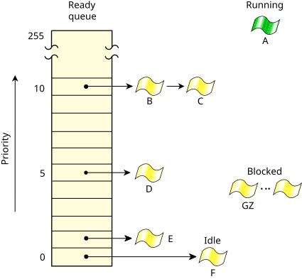

Every thread is assigned a priority. The thread scheduler selects the next thread to run by comparing the priorities of READY threads (i.e., those capable of using a processor).
Thread displacement on multicore systemssection of the Programmer's Guide.
For each scheduling decision on a given processor, the scheduler looks at
the highest priority READY threads that can run on each cluster (i.e., group of
associated processors) that the processor belongs to, and then selects the highest-priority
thread from this set. For information about clusters and configuring processor affinity for
threads (i.e., associating threads with specific clusters), refer to the
Processor affinity, clusters, runmasks, and inherit masks
section of the
Programmer's Guide.
The following diagram shows the ready queue for a single-core system with five threads (B–F) that are READY. Thread A is currently running. All other threads (G–Z) are BLOCKED. Threads A, B, and C are at the highest priority, so they'll share the processor based on their scheduling policies.

The OS supports a total of 256 scheduling priority levels. An unprivileged thread can set its priority to a level from 1 to 63 (the highest unprivileged priority), independent of the scheduling policy. Only threads with the PROCMGR_AID_PRIORITY ability enabled (see procmgr_ability() in the C Library Reference) are allowed to set priorities above 63. The special idle thread (in the process manager) has priority 0 and is always ready to run. A thread inherits the priority of its parent thread by default.
procnto-smp-instr -P priority
You can append an s or S to this option
if you want out-of-range priority requests by default to use the maximum allowed priority
(reach a maximum saturation point
) instead of resulting in an error.
When you're setting a priority, you can wrap it in one these (non-POSIX) macros to specify how to handle
out-of-range priority requests:
| Priority level | Owner |
|---|---|
| 0 | Idle thread |
| 1 through priority − 1 | Unprivileged or privileged |
| priority through 255 | Privileged |
Note that in order to prevent priority inversion, the kernel
may temporarily boost a thread's priority.
For more information, see
Priority inheritance and mutexes
later in this chapter, and
Priority inheritance and messages
in the Interprocess Communication (IPC) chapter.
The initial priority of the kernel's threads is 255, but the first thing
they all do is block in a
MsgReceive(),
so after that they operate at the priority of threads that send messages
to them.
The threads on the ready queue are ordered by priority. The ready queue is actually implemented as 256 separate queues, one for each priority. The first thread in the highest-priority queue is selected to run.
Most of the time, threads are queued in FIFO order in the queue of their priority, but there are some exceptions:
nc(non-cancellation point) variant of MsgSend*(), then when the server replies, the thread is placed at the front of the ready queue, rather than at the end. If the scheduling policy is round-robin, the thread's timeslice isn't replenished; for example, if the thread had already used half its timeslice before sending, then it still has only half a timeslice left before being eligible for preemption.